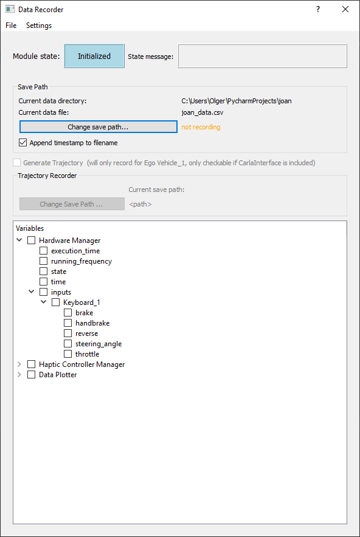

Module: DataRecorder
The data recorder module is used to record data from an experiment in JOAN to CSV files. It automatically sees all shared variables (News) from all other modules. This means that the raw data from Carla, such as positions and velocities of the vehicles, can be stored (since it is shared by the Carla interface module). But you can also store internal signals used in modules, such as the current controller error in an NPC controller. You can select which variables to store and where you want them to be stored in the module’s GUI.
Below is a screenshot of the data recorder dialog, the next section explains how to use the data recorder.

Using the Module
Because the data recorder needs access to the shared variable objects of all other modules, the workflow of the data recorder is fixed. First, in the stopped state a save path needs to be set. If no save path is specified, the data recorder will go to error-state if you try to transition to initialized. If you do not wish to use the data recorder then remove it from JOAN in main.py. The checkbox "Append timestamp to filename" is checked by default, but you can uncheck it to save to the actual path you provided.
Important
The data recorder will clear any existing files with the same name and overwrite them with new data once you transition to the ready state. Keeping the "Append timestamp" checkbox check will prevent you from losing data because it will make every filename unique.
After specifying a file path where the data is stored, you can transition to the initialized state. In this state, all other modules have their settings fixed, this means the data recorder has access to the final shared variable objects. Now you can define which variables you want to store by checking the appropriate boxes in the tree menu. This selection and the save file path specified earlier are saved in the settings of the data recorder. This means users can include them in an experimental condition in the experiment manager. Please see the notes about including the data recorder in your experiment on the page about the experiment manager.
There are some important things to consider when selecting variables to save, please read the block below carefully.
Important
Some notes on recording variables with the data recorder
-
Think carefully about what data you'll need in the future and what you need to save, anything omitted here cannot be reconstructed afterward. Run test experiments and do the full data analysis you plan to do on the real experiment to verify if you have all the necessary data.
-
Do not simply store everything. Some data objects in the shared variable objects are quite big, if you write them to a file at ≈10 Hz the files will get big quickly and the data recorder might clog up. For example, the Carla interface shares array's with road boundaries, there are almost no situations in which you need to store them. If you do add them to your data recorder, the data files can grow in the order of Mb's/second of recorded data.
-
Since all modules run in parallel and are unsynchronized, the data points you store on a single row might not be taken at exactly the same time. To prevent issues when analyzing your data, store the
timevariable for every module that you store data from. These timestamps indicate the precise time of that module’s data. Also, keep in might that for the same reason a data point from a slow running module might be stored in two consecutive rows by the data recorder. This is no error, nor does it indicate that a module is running jerky, even though it might look like it from the stored data.
storing trajectories with the data recorder
The data recorder can also store trajectories of ego vehicle 1 for use with the haptic controllers by checking the 'generate trajectory' checkbox. These trajectories contain waypoints with position, heading, and velocity information. This format is specifically meant for use with controllers, not for general logging. You can store the same information in a regular data file by selecting the correct variables. If you want to do data analysis, we recommend saving the data in regular files. Trajectory saving is a beta feature, you should manually verify that the stored trajectory is correct before you use it in a haptic shared controller. Using incorrect trajectories for haptic feedback rendering could be dangerous!